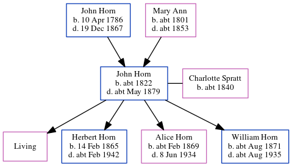

John Horn c1822 - c1879
[ Home ] | [ Calendar ] | [ Surnames Index ] | [ Census Index ] | [ Family History ]An agricultural laborer and the child of John Horn (a laborer) and Mary Ann, John Horn, the three times great-uncle of Nigel Horne, was born in Margate, Kent, England c. 18221,2,3, was baptized there at St John the Baptist's Church on Oct 2, 1825 and married Charlotte Spratt (a laundress with whom he had 4 children: Mary Elizabeth, Herbert James, Alice Clara and William James, along with 1 surviving child) in Thanet, Kent, England around Aug 18594.
During his life, he was living at 6 Chapel Hill in Margate on Mar 30, 18516; and at Northdown in Margate on Apr 2, 18715.
He died c. May 1879 in Thanet2,3 and was buried at St John the Baptist's Church in Margate on Jun 6, 18793.
Parents
- John was born on Apr 10, 1786
- Mary Ann was born c. 1801
Children
- Herbert James was born on Feb 14, 1865
- Alice Clara was born c. Feb 1869
- William James was born c. Aug 1871
Citations
- 1851 England Census Online publication - Provo, UT, USA: The Generations Network, Inc., 2005.Original data - Census Returns of England and Wales, 1851. Kew, Surrey, England: The National Archives of the UK (TNA): Public Record Office (PRO), 1851. Data imaged from the National
- England & Wales deaths 1837-2007 - Findmypast
- Kent, Canterbury Archdeaconry Burials - Findmypast
- England & Wales Marriages 1837-2005 - Findmypast
- 1871 England, Wales & Scotland Census - Findmypast (was age 49 and the head of the household)
- 1851 England, Wales & Scotland Census - Findmypast (was age 25 and the son of the head of the household)
Media
England & Wales marriages 1837-2005 - BMD/M/1859/3/AZ/000926/004
Kent, Canterbury Archdeaconry burials - GBPRS/CANT/D/95012102
1851 England, Wales & Scotland Census - GBC/1851/0005885657
England Births & Baptisms 1538-1975 - R_884639422
England Births & Baptisms 1538-1975 - R_885865059
England Births & Baptisms 1538-1975 - R_885525312
Family Tree
Generated by ged2site. Last updated on Jun 11, 2024